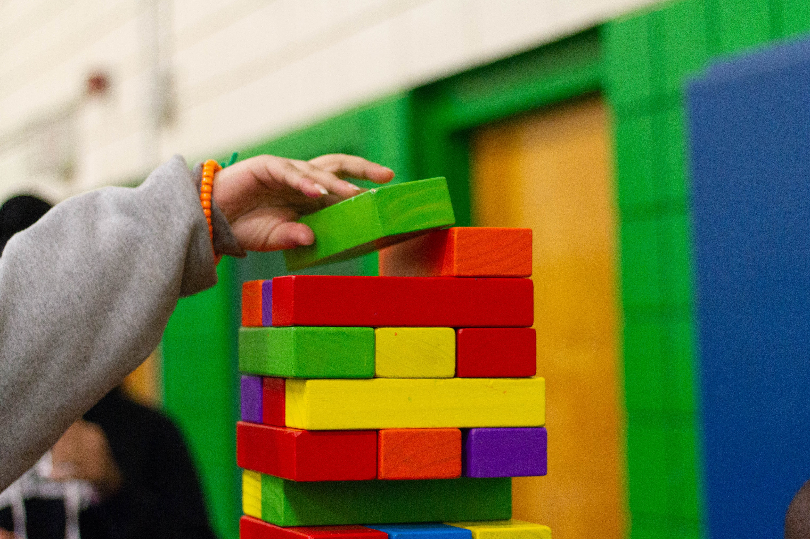

 Paloma Domínguez
Paloma Domínguez
23
Jun
2024
Co-designing DynaClassroom with Children (Part 1)
The concept of participatory design
Tiempo: 8 minutos
We are thrilled to bring you the eagerly awaited conclusion of our captivating series, chronicling the remarkable adventure of co-designing DynaClassroom alongside children. In this milestone post, we present a succinct yet illuminating overview of the workshop’s outcomes, accompanied by invaluable insights into the qualitative analysis process that unfolded.
Discover Workshop Results
The workshop’s primary objective was to delve into the fundamental principles that underpin the core concepts of our ultimate product — DynaClassroom. Our foremost aim was to highlight the significance of user engagement, particularly within the realm of participatory design. Throughout the workshop, we encouraged children to actively participate and engage in hands-on activities, fostering a “learning by doing” 1 approach. As a result, we witnessed the development of six artifacts and three extensions by the participating groups. Each artifact was visually represented by a wireframe, showcasing the interactive game they had chosen to create. Take a glimpse at one of these remarkable artifacts in the picture shared:

Insights into Data Collection & Analysis
As with any User Research process 2, data collection is an important step for further analysis. To capture the essence of our workshop sessions, we employed various cameras and perspectives, accumulating a staggering total of 32 hours of video recordings. Then, during data processing, the interviews were meticulously transcribed using advanced transcription software, while manual notes were diligently taken while reviewing each 360º video. Subsequently, a thematic analysis 3 was conducted to examine the collected data systematically. Our goal was to identify recurring patterns, themes, and key insights within the dataset. The analysis involved a rigorous process of coding and categorizing the data based on these identified themes.

One of my biggest concerns as a junior researcher was to find a proper guide on how to perform a thematic analysis. There are tons of articles around the internet but few of them are deep into the process with concrete examples on how to find and declare patterns. For that reason, I recommend concretely this book Thematic Analysis: a practical guide 2 and I will describe my step-by-step process to detect patterns in such a variety of inputs.
Leveraging the Power of ATLAS
For our qualitative data analysis, we relied on ATLAS, a widely acclaimed software tool specifically designed for this purpose. ATLAS equipped us with a comprehensive set of features and functionalities, empowering us to organize, analyze, and interpret our qualitative data effectively. With its support for diverse coding techniques, we were able to assign codes to specific data segments and organize them into meaningful themes. Moreover, ATLAS facilitated data retrieval, visualization, and reporting, enabling us to derive profound insights and generate meaningful interpretations.
AI-Assisted Coding Unveiled
In our analysis process, we capitalized on ATLAS’s latest functionality that allows for automated coding using artificial intelligence algorithms. By inputting the data into ATLAS, we harnessed its AI capabilities to analyze the content and assign appropriate codes. The results were then employed to create a visually stunning TreeMap, representing the frequency or weight of each code.
This visualization, displayed in the accompanying figure, vividly demonstrates the prominence and occurrence of different codes. While we encountered some limitations of current AI capabilities, this innovative approach provided valuable insights into our data analysis.

The Power of Manual Coding
In conjunction with AI coding, we also employed a “manual coding” approach, which involved a meticulous examination of the data to identify relevant themes and assign appropriate codes manually. In a natural language, read your notes and transcripts as many times as necessary, until you assign codes to words, phrases, or paragraphs that represent sentiments or behavior patterns. This thorough and systematic review ensured comprehensive coverage of key themes. To visualize the distribution and significance of these codes, we employed a TreeMap, as depicted in the accompanying figure.

Our comprehensive analysis, combining manual coding and AI coding facilitated by ATLAS, uncovered a myriad of fascinating themes which are not described here yet due to development phase reasons. These findings, which align with our previously hypothesized concepts ), shed light on crucial aspects of DynaClassroom’s co-design journey.
However, stay tuned as we continue to unravel the intricate tapestry of insights gained through our workshops, revealing the remarkable impact of user collaboration on DynaClassroom’s development.
 Rafael Luque
Rafael Luque Ruth Zamorano
Ruth Zamorano Jorge Franco
Jorge Franco